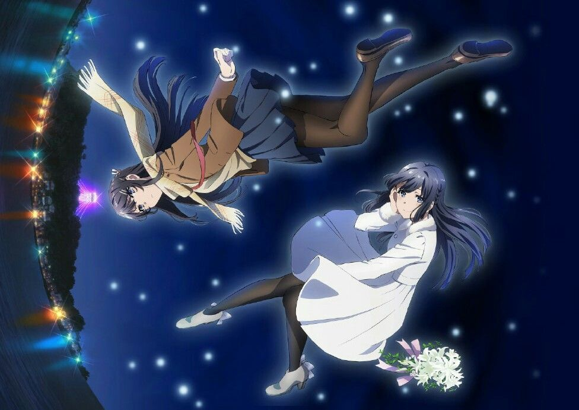
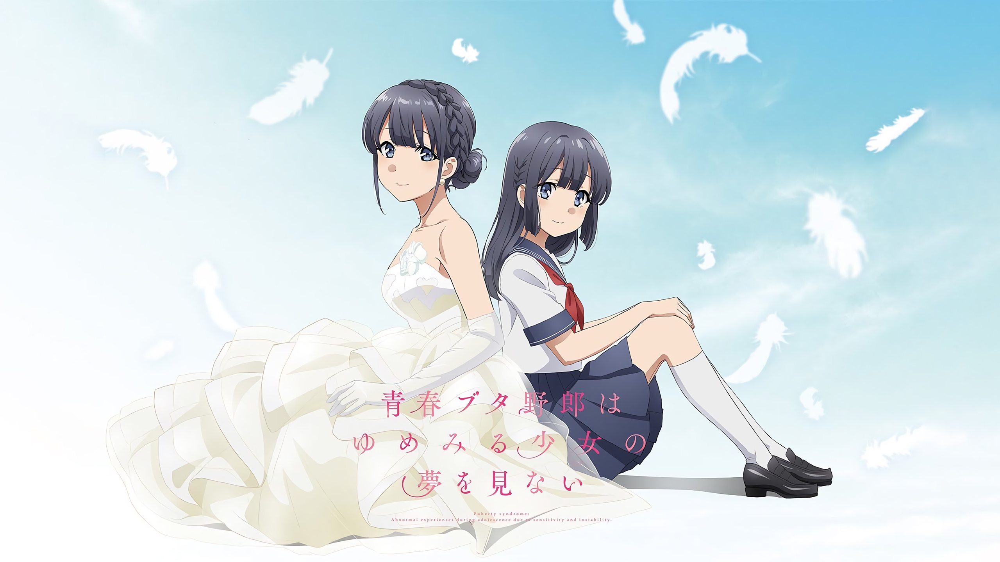

Seishun Buta Yarou wa Yumemiru Shoujo no Yume wo Minai
青春ブタ野郎はゆめみる少女の夢を見ない
Rascal Does Not Dream of a Dreaming Girl

MAL Rating : 8.64/10
Personal Preference : 9/10
Ranked #60
Popularity #318
Released Year: 2019
Genres: Drama, Romance, Supernatural
Six months ago, Sakuta Azusagawa had a chance encounter with a bunny girl in a library. Ever since then, he's been blissfully happy with his girlfriend: Mai Sakurajima, that same bunny girl. However, the reappearance of his mysterious first crush, the now-adult Shouko Makinohara, adds a new complication to his relationship with Mai. To make matters worse, he then encounters a middle school Shouko in the hospital, suffering from a grave illness. Mysteriously, his old scars begin throbbing whenever he's near her.

